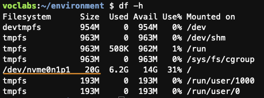

gl / es
AWS Batch
Actividade práctica sobre AWS Batch
Obxectivo
O obxectivo desta actividade é comprobar de maneira práctica os conceptos básicos do servizo AWS Batch.
Para realizar esta actividade vamos usar como base este curso dispoñíbel na plataforma AWS Workshop Studio. O curso só está dispoñíbel en inglés, pero podes axudarte, p. ex., da tradución automática integrada no teu navegador se o precisas.
Nota
Para realizar a actividade segue as instrucións do curso tendo en conta a medida que avances as indicacións que se che dan nesta páxina.
A continuación recóllense as indicacións adicionais que terás que ter en conta en cada sección do exemplo:
Workshop setup
Para realizar a actividade vamos utilizar o Learner Lab de AWS Academy. Non fagas o que se indica no curso, no seu lugar fai os pasos seguintes:
- Accede á consola AWS desde a túa conta do Learner Lab de AWS Academy.
- Accede á consola do servizo Cloud9 e segue os pasos indicados neste apartado do curso para crear un ambiente Cloud9. Usa os valores indicados no curso coas seguintes excepcións:
- Na propiedade Timeout da sección New EC2 Instance escolle 1 hora.
- Na sección Network settings escolle a conexión Secure Shell (SSH).
- Accede ao ambiente Cloud9 lanzado no paso anterior e fai o seguinte:
- Instala JQ executando nun terminal:
sudo yum -y install jq - Para poder crear imaxes Docker precisamos un espazo de disco maior do proporcionado por defecto por Cloud9. Para aumentar o espazo do disco ríxido a 20GB executa:
curl -s https://micap-hpcn.github.io/assets/resize.sh | bash /dev/stdin 20 - Comproba que o tamaño do disco é agora de 20GB executando:
df -h
- Instala JQ executando nun terminal:
Imaxe: tamaño do disco despois de redimensionalo a 20GB. 
Building a Docker container
Nesta sección sigue os pasos do curso.
Set up AWS Batch resources
Nesta sección sigue os pasos do curso tendo en conta o seguinte:
Set up a Compute Environment
- No paso 6, na propiedade Instance role escolle LabInstanceProfile.
Set up a Job Definition
- No paso 8, escolle LabRole nas propiedades Execution role e Job role configuration.
Run batch jobs
Nesta sección fai só os dous primeiros apartados (Run a single job e Run an array job) seguindo os pasos do curso.
Nota
Actualiza a información do traballos e dos seus logs a medida que se executen premendo nos botóns que refrescan a información da consola.
Optimize cost with EC2 Spot
Sáltate esta sección. O Learner Lab de AWS Academy non permite utilizar instancias EC2 de tipo spot.
Next steps and clean up
Sigue os pasos do apartado Clean up tendo en conta o seguinte:
- No paso 5, desactiva o Compute environment antes de eliminalo.
- Non fagas os pasos 7 e 8: Empty the S3 bucket e Delete the CloudFormation stack.
Ademais, fai o seguinte:
- Na consola de Cloud9 elimina o ambiente MyCloud9Env.
Licenza

Actividades adicionais para as prácticas de Computación na Nube para IoT de Xoán C. Pardo ten unha licenza Creative Commons Recoñecemento-Non comercial 4.0 Internacional.